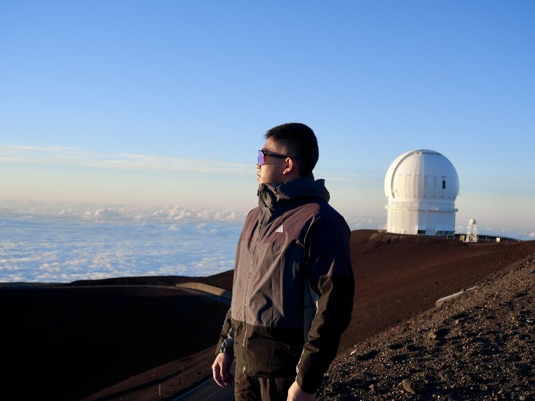
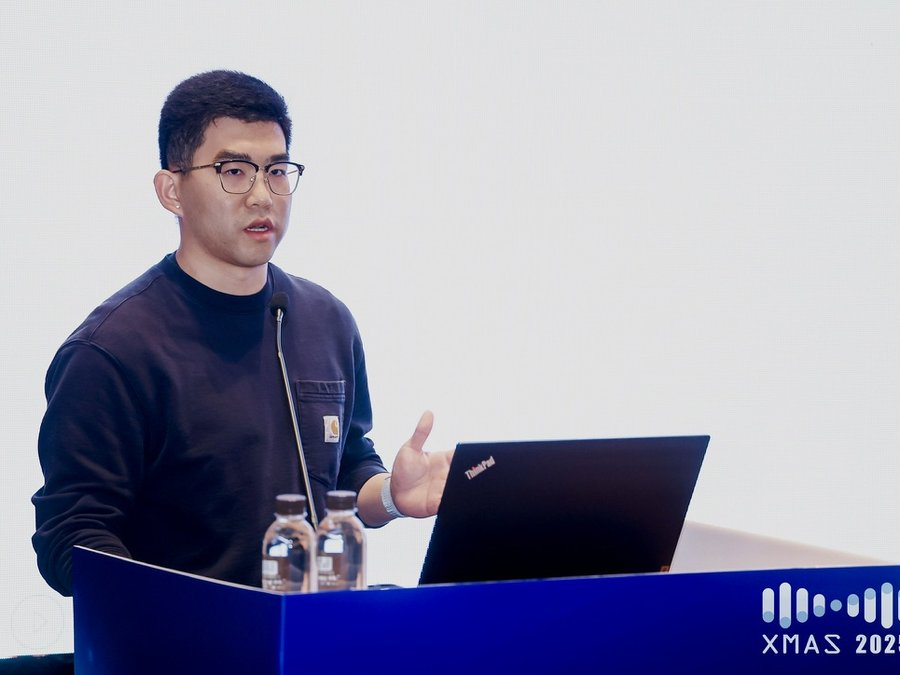

Carbon observations and air–sea CO₂ exchange
I use shipboard measurements, autonomous BGC-Argo observations, and time-series data to understand how physical and biological processes regulate dissolved inorganic carbon, pCO₂, and air–sea CO₂ flux.
Research
I use shipboard measurements, autonomous BGC-Argo observations, and time-series data to understand how physical and biological processes regulate dissolved inorganic carbon, pCO₂, and air–sea CO₂ flux.

My current work investigates the role of Antarctic Winter Water and sea-ice variability in Southern Ocean carbon exchange.

I study how bloom phenology, particulate organic carbon, sediment traps, and BGC-Argo observations constrain carbon export.

My work includes machine-learning and statistical approaches to reconstruct marine carbon variables and diagnose mechanisms.